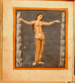

Aratea. Een bewerking van de Latijnse vertaling uit het Grieks van Aratus’ Phaenomena door Germanicus Caesar. Latijn. Handschrift op perkament, 99 ff., 225 x 200 mm. Noordoost-Frankrijk, tweede kwart van de negende eeuw. -- (VLQ 79)
Negenendertig bladgrote miniaturen vormen de basis van de Leidse Aratea. Oorspronkelijk waren het er zelfs meer. Latere kopieën bewijzen dat ten minste vier miniaturen uit het handschrift zijn gesneden. Op elke illustratie volgt een tekst, waarin de afbeelding wordt verklaard. Hij is vooral ontleend aan Latijnse vertalingen van het meest gevierde astronomische handboek van de Oudheid, de Phaenomena van Aratus van Soli (circa 315-240/239 v.Chr.). De grondslag van de tekst leverde de vertaling van Germanicus Caesar (15 v.Chr. - 19 na Chr.). Maar omdat die niet altijd toereikend was om de illustraties toe te lichten, zijn ook passages ingelast uit de vertaling van Rufius Festus Avienus uit de vierde eeuw.
De Aratea is dus een prentenboek, maar dan wel een van uitzonderlijke kwaliteit. Wanneer de platen en teksten voor het eerst zijn samengebracht, is niet bekend. De compilator die daarvoor verantwoordelijk was, verraadt echter een heel slechte beheersing van het Latijn. Dat is de voornaamste reden om te denken aan de eerste helft van de negende eeuw, toen aan het hof van Karel de Grote, later ook aan dat van Lodewijk de Vrome, de astronomie weer in het centrum van de belangstelling stond. Het buitensporig luxueuze karakter van het Leidse handschrift maakt een herkomst uit de kringen rond het hof waarschijnlijk. De boven vermelde datering steunt vooral op paleografische gronden.
In elk geval beschikte de compilator over een reeks schitterende illustraties van sterrenbeelden uit de laat-Romeinse oudheid. Ze zijn in dit handschrift zo zorgvuldig gekopieerd dat zij ons een zeldzaam betrouwbaar beeld geven van de antieke boekkunst, waarvan de originele werken bijna zonder uitzondering verloren zijn gegaan.
De getoonde miniatuur op folio 30v stelt Andromeda voor. Als alle sterrenbeelden in het handschrift is zij geschilderd tegen een blauwe achtergrond met daaromheen een vuurrode omlijsting. De sterren, hier vijfentwintig in getal, zijn in goud uitgevoerd. De halfnaakte figuur van Andromeda weerspiegelt in haar houding, oogopslag, weergave van de kleding, evenals het kleurenpalet en de verfbehandeling, het klassieke voorbeeld. Overeenkomstig het verhaal is zij aan de rotsen geketend, die maar schematisch zijn weergegeven. De voorstelling combineert derhalve, evenals de tekst, astronomische met mythologische gegevens.
In 1600 werd de afbeelding gegraveerd door Jacob de Gheyn (zie nummer 61).
In verband met de voorbereiding van een facsimile-editie die in 1987 verschenen is te
Luzern, is het handschrift tijdelijk uit de band genomen; daardoor is het mogelijk twee
bladen te exposeren (zie voor het tweede blad nummer 52).
Literatuur
- G. Thiele, Antike Himmelsbilder. Mit Forschungen zu Hipparchos, Aratos und seinen Fortsetzern und Beiträgen zur Kunstgeschichte des Sternhimmels. Berlin 1898.
- A.W. Byvanck, Les principaux manuscrits à peintures conservés dans les collections publiques du Royaume des Pays-Bas, Paris 1931 ( = Bulletin de la Société francaise de reproduction des manuscrits à peintures. 15), p. 65-67, pl. XIX.
- K. Weitzmann, Illustrations in roll and codex. A study of the origin of text illustration. Princeton 1947, p. 105, 112, 157-158, 160-161.
- Karl der Grosse, Werk und Wirkung. Aachen 1965, nr. 485, pl. IV.
- W. Koehler und F. Mütherich, Die karolingischen Miniaturen. Tl. 4. Berlin 1971, p. 79-81, 108-116, pl. 75-96.
- K.A. de Meyïer, Codices Vossiani Latini. Leiden 1973-1984 ( = Bibliotheca Universitatis Leidensis. Codices manuscripti. XIII-XVI), t. 2, p. 186-189, t. 4, p. 9-10.
- The age of spirituality. Late antique and early Christian art, third to seventh century. Ed. by K. Weitzmann. New York 1979, p. 214.
- C.L. Verkerk, ‘Aratea: a review of the literature concerning MS. Vossianus lat. q. 79 in Leiden University Library’, in: Journal of medieval history, 6 (1980), p. 245-287.
- B. Bischoff, Mittelalterliche Studien. Ausgewählte Aufsätze zur Schriftkunde und Literaturgeschichte. Bd. 3. Stuttgart 1981, vooral p. 181.
| vorige pagina | top pagina |